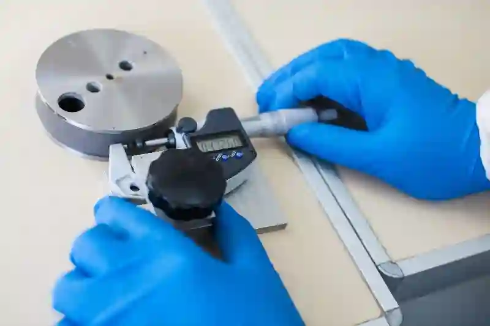
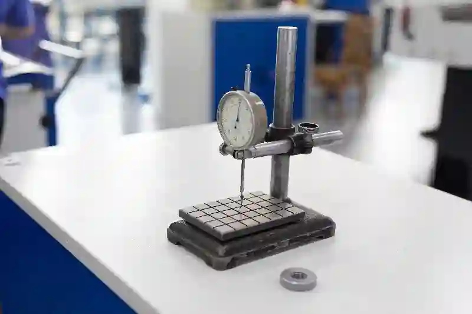
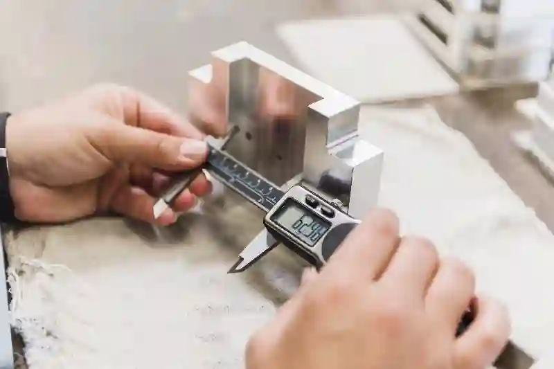
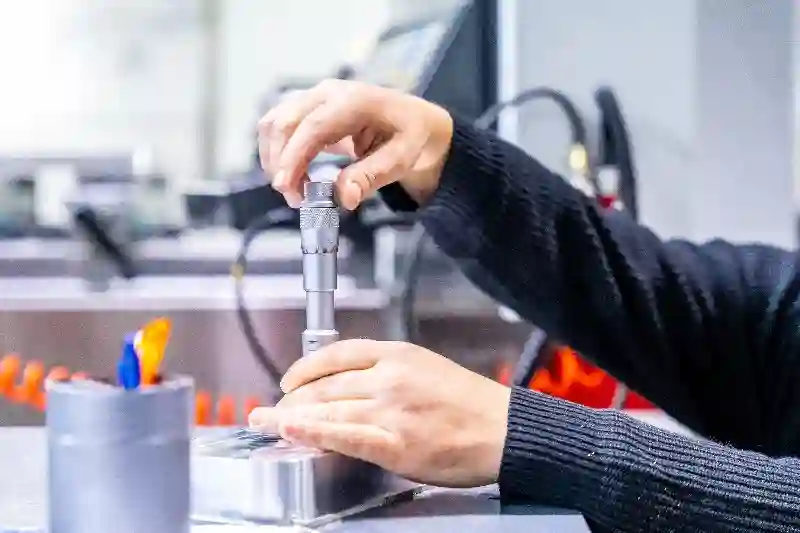

Kalite Kontrol ve Ölçüm Hizmetleri ile Güvenilir Üretim Standartları
Modern endüstriyel üretimde sürdürülebilir başarı, yalnızca ileri teknoloji tezgâh yatırımlarıyla değil, bu üretimin doğrulanabilir, ölçülebilir ve izlenebilir olmasıyla mümkündür. Aymaksan Makina, üretimin her aşamasında uyguladığı kalite kontrol ve ölçüm hizmetleri yaklaşımı ile parçaların yalnızca teknik resme uygunluğunu değil, aynı zamanda uzun vadeli performans güvenliğini de garanti altına alır. CNC tornalama, CNC frezeleme, özel talaşlı imalat ve kaynaklı montaj süreçlerinde kalite, üretimin son aşaması değil; sürecin ayrılmaz bir parçası olarak ele alınır.
Endüstriyel üretimde ölçüm, yalnızca bir kontrol faaliyeti değildir. Ölçüm; tolerans yönetimi, proses doğrulama ve sürekli iyileştirme için stratejik bir veri kaynağıdır. Bu nedenle cnc üretimde kalite kontrol süreçleri, yalnızca hatalı parçaların ayrıştırılmasını değil, üretim performansının analiz edilmesini de kapsar. Aymaksan Makina’da uygulanan endüstriyel ölçüm hizmetleri, ölçüm cihazlarının kalibrasyonu, operatör yetkinliği ve standartlara uygun raporlama sistemleri ile desteklenir. Bu yaklaşım sayesinde, müşterilere sunulan her parça; ölçülebilir doğruluk, tekrarlanabilir kalite ve izlenebilir üretim verileri ile birlikte teslim edilir. Hassas ölçüm ve tolerans kontrolü, yalnızca bugünkü üretim için değil, seri üretim sürekliliği için de kritik bir avantaj sağlar.
Kalite Kontrolün Endüstriyel Üretimdeki Stratejik Rolü
Endüstriyel üretim ortamlarında kalite kontrol, yalnızca nihai ürünün uygunluğunu değil, üretim sürecinin tamamının güvenilirliğini temsil eder. Özellikle talaşlı imalatta kalite kontrol, parça fonksiyonelliğini doğrudan etkileyen ölçüsel doğruluğun sağlanması açısından kritik öneme sahiptir. Mikron seviyesinde sapmaların dahi performans kaybına yol açabildiği sektörlerde, kalite kontrol sistematik ve planlı bir şekilde yürütülmelidir.
Aymaksan Makina’da kalite kontrol, üretimden bağımsız bir kontrol noktası olarak değil; üretimle entegre çalışan bir süreç yönetimi olarak ele alınır. Bu sayede ölçüm sonuçları yalnızca kabul veya red kararı vermek için değil, proses optimizasyonu için de kullanılır. Üretim süreçlerinde kalite güvence yaklaşımı, hataların tekrar etmesini önleyen veri temelli iyileştirmeleri mümkün kılar.
Ayrıca kalite kontrol süreçleri, müşteri taleplerinin teknik gerekliliklere doğru şekilde yansıtılmasını sağlar. Teknik resimler, tolerans tabloları ve fonksiyonel gereksinimler; ölçüm planları ile birebir eşleştirilir. Böylece cnc parça ölçüm ve raporlama faaliyetleri, yalnızca iç denetim için değil, müşteri tarafında da güven oluşturan bir dokümantasyon yapısı sunar.




Ölçüm Odaklı Üretim Kültürü
Ölçüm odaklı üretim, kalite kontrolün yalnızca son aşamada yapılan bir denetim olmaktan çıkmasını sağlar. Bu yaklaşımda ölçüm, üretimin doğal bir parçasıdır ve operatörler ölçüm verilerini aktif olarak yorumlar. Endüstriyel ölçüm hizmetleri, bu kültürün temel yapı taşını oluşturur.
Aymaksan Makine’de ölçüm, üretim sürecinin her kritik noktasında devreye alınır. İlk parça onayı, ara ölçümler ve final kontrol aşamaları, ölçüm sonuçlarının karşılaştırmalı olarak değerlendirilmesini sağlar. Bu sayede tolerans dışı üretim riskleri daha oluşmadan kontrol altına alınır.
Projeni Başlat
CNC Üretimde Ölçüm ve Tolerans Yönetimi
CNC tabanlı üretim süreçlerinde ölçüm, yalnızca parçanın kabul edilebilirliğini değil, üretimin bütünsel doğruluğunu temsil eder. Özellikle seri üretim ve yüksek hassasiyet gerektiren uygulamalarda cnc üretimde kalite kontrol, toleransların sürdürülebilir şekilde yönetilmesini zorunlu kılar. Aymaksan Makina’da tolerans yönetimi, teknik resimden başlayarak ölçüm planına kadar uzanan sistematik bir süreç olarak ele alınır.
Toleranslar yalnızca sayısal sınırlar değildir; fonksiyon, montaj uyumu ve parça ömrü üzerinde doğrudan etkiye sahiptir. Bu nedenle hassas ölçüm ve tolerans kontrolü, yalnızca nihai kontrol aşamasında değil, proses içi denetimlerle birlikte yürütülür. Ölçüm sonuçları üretim parametreleriyle ilişkilendirilerek sapmaların kök nedenleri analiz edilir. Bu yaklaşım, üretim süreçlerinde kalite güvence yapısının temelini oluşturur.
CNC tornalama ve frezeleme süreçlerinde ölçüm stratejileri, işlenen malzeme türü, parça geometrisi ve fonksiyonel gereksinimlere göre özel olarak planlanır. Böylece cnc parça ölçüm ve raporlama faaliyetleri, yalnızca uygunluk belgesi değil, aynı zamanda üretim performans göstergesi olarak da değerlendirilir.
İlk Parça Onayı ve Seri Üretimde Ölçüm Stratejileri
Seri üretime geçiş sürecinde ilk parça onayı, kalite kontrol zincirinin en kritik adımlarından biridir. İlk parça, üretim parametrelerinin doğruluğunu ve prosesin stabilitesini temsil eder. Aymaksan Makina’da ilk parça onayı, detaylı hassas ölçüm ve tolerans kontrolü ile gerçekleştirilir ve seri üretim için referans kabul edilir.
Bu aşamada yapılan ölçümler, yalnızca tolerans uygunluğunu değil, ölçüm tekrarlanabilirliğini de kapsar. İlk parça ölçüm sonuçları, üretim süreci boyunca karşılaştırma noktası olarak kullanılır. Böylece cnc üretimde kalite kontrol, yalnızca başlangıçta değil, üretimin tamamında tutarlılık sağlar.
Seri üretimde ölçüm stratejileri, parça karmaşıklığına ve üretim hacmine göre belirlenir. Kritik ölçüler için sık aralıklarla kontrol yapılırken, stabil ölçülerde örnekleme yöntemi uygulanabilir. Bu sistematik yaklaşım, cnc parça ölçüm ve raporlama süreçlerinin verimli ve sürdürülebilir olmasını sağlar.
Tolerans Sınıfları ve Teknik Resim Okuma Disiplini
Teknik resimler, kalite kontrol süreçlerinin başlangıç noktasıdır. ISO standartlarına göre tanımlanmış tolerans sınıfları, ölçümün hangi hassasiyette yapılacağını belirler. Aymaksan Makina’da kalite kontrol süreci, teknik resimlerin yalnızca okunmasıyla sınırlı değildir; toleransların fonksiyonel anlamı da analiz edilir.
Bu yaklaşım, gereksiz sıkı toleransların önüne geçerken, kritik yüzeylerde maksimum hassasiyet sağlar. Özellikle talaşlı imalatta kalite kontrol, geometrik toleranslar, yüzey pürüzlülüğü ve eşmerkezlilik gibi unsurların bütüncül değerlendirilmesini gerektirir. Ölçüm stratejileri bu doğrultuda optimize edilir. Teknik resimlerde tanımlanan tolerans sınıfları, uluslararası standartlara göre belirlenir. ISO tolerans standartları
Proses İçi Ölçüm ve Sürekli İzleme Yaklaşımı
Proses içi ölçüm, hataların üretimin erken aşamalarında tespit edilmesini sağlar. Bu yaklaşım sayesinde tolerans dışına çıkma riski minimize edilir. Aymaksan Makina’da endüstriyel ölçüm hizmetleri, yalnızca final kontrolde değil, kritik operasyonlar arasında da uygulanır.
Ölçüm sonuçları kayıt altına alınarak üretim tekrarlanabilirliği güvence altına alınır. Bu veriler, seri üretim geçişlerinde referans olarak kullanılır ve kalite sürekliliği sağlanır. Böylece kalite kontrol ve ölçüm hizmetleri, yalnızca kontrol değil, aynı zamanda üretim optimizasyon aracı haline gelir.
Ölçüm Verilerinin Dijital Raporlama ile Desteklenmesi
Ölçüm sonuçlarının doğru şekilde raporlanması, kalite kontrolün ayrılmaz bir parçasıdır. Dijital raporlama sistemleri, ölçüm verilerinin izlenebilirliğini artırır. Aymaksan Makina’da hazırlanan raporlar, müşteri taleplerine uygun formatta ve teknik detayları eksiksiz şekilde sunulur.
Bu yapı sayesinde cnc parça ölçüm ve raporlama, denetim süreçlerinde güvenilir bir referans kaynağı oluşturur. Aynı zamanda üretim geçmişinin belgelenmesi, kalite sürekliliği açısından önemli bir avantaj sağlar. Ölçüm verilerinin izlenebilirliği, endüstriyel üretimde kalite güvencesini güçlendirir. T.C. Sanayi ve Teknoloji Bakanlığı Hizmet Başvurusu
Projeni Başlat
Kalite Kontrol ve Ölçüm Ekipmanları ile Doğrulama Süreçleri
Endüstriyel üretimde ölçümün güvenilirliği, kullanılan ekipmanların doğruluğu ve uygunluğu ile doğrudan ilişkilidir. Aymaksan Makina’da uygulanan kalite kontrol ve ölçüm hizmetleri, yalnızca deneyime dayalı kontrollerle sınırlı değildir; uluslararası standartlara uygun ölçüm ekipmanlarıyla desteklenen sistematik bir doğrulama sürecini kapsar. CNC üretim ortamlarında ölçüm cihazlarının seçimi, parça geometrisi ve tolerans gereksinimlerine göre özel olarak planlanır.
Özellikle hassas toleranslara sahip parçalarda cnc üretimde kalite kontrol, ölçüm ekipmanlarının çözünürlüğü ve tekrarlanabilirliği ile anlam kazanır. Bu nedenle ölçüm cihazları, yalnızca ölçüm yapmak için değil, ölçüm güvenilirliğini belgelemek için de kullanılır. Endüstriyel ölçüm hizmetleri, bu yaklaşım sayesinde üretim hatalarını minimize ederken, kalite sürekliliğini güvence altına alır.
Manuel Ölçüm Ekipmanları ile Temel Kontroller
Manuel ölçüm ekipmanları, kalite kontrol süreçlerinin temel yapı taşlarından biridir. Kumpas, mikrometre ve komparatör gibi ekipmanlar, özellikle hızlı kontrol gerektiren üretim adımlarında etkin şekilde kullanılır. Talaşlı imalatta kalite kontrol, manuel ölçüm cihazlarının doğru kullanımını ve operatör yetkinliğini zorunlu kılar.
Aymaksan Makina’da manuel ölçüm ekipmanları, periyodik kalibrasyon süreçlerinden geçirilerek ölçüm doğruluğu garanti altına alınır. Bu sayede hassas ölçüm ve tolerans kontrolü, yalnızca ölçüm cihazına değil, ölçümü gerçekleştiren sürecin bütününe yayılmış olur.
Dijital ve Hassas Ölçüm Sistemlerinin Rolü
Dijital ölçüm sistemleri, manuel kontrollerin ötesinde yüksek doğruluk ve veri bütünlüğü sağlar. Özellikle karmaşık geometrilere sahip parçalarda cnc parça ölçüm ve raporlama, dijital ölçüm sistemleri ile desteklenir. Bu sistemler, ölçüm sonuçlarının doğrudan kayıt altına alınmasını ve analiz edilmesini mümkün kılar.
Dijital ölçüm cihazları sayesinde ölçüm sonuçları, üretim parametreleriyle ilişkilendirilir. Bu yaklaşım, üretim süreçlerinde kalite güvence sisteminin veri temelli yönetilmesini sağlar. Ölçüm sonuçlarının dijital ortamda saklanması, izlenebilirlik ve denetlenebilirlik açısından önemli bir avantaj sunar. Makine parkımız ölçüm ve raporlamayı kolaylaştıran minimum hatalar için uygun bir yapıdadır.
Kalibrasyon ve Ölçüm Güvenilirliği
Ölçüm ekipmanlarının doğruluğu, düzenli kalibrasyon ile sürdürülebilir hale gelir. Kalibrasyon süreçleri, ölçüm cihazlarının referans değerlerle uyumlu çalışmasını sağlar. Aymaksan Makina’da kalibrasyon planları, üretim yoğunluğu ve ekipman kullanım sıklığına göre oluşturulur.
Bu yaklaşım sayesinde endüstriyel ölçüm hizmetleri, yalnızca ölçüm sonucuna değil, ölçümün güvenilirliğine de odaklanır. Kalibrasyon kayıtları, kalite denetimleri ve müşteri talepleri doğrultusunda raporlanarak şeffaf bir kalite yönetim yapısı sunar. Kalibrasyon süreçleri, ölçüm güvenilirliğinin temel unsurlarındandır.
Projeni Başlat
Kalite Kontrol Süreçlerinin Üretimle Entegrasyonu
Kalite kontrolün etkinliği, üretimden bağımsız bir denetim faaliyeti olarak değil, üretim süreçleriyle entegre çalışan bir sistem olarak kurgulanmasına bağlıdır. Aymaksan Makina’da uygulanan kalite kontrol ve ölçüm hizmetleri, üretimin planlama aşamasından sevkiyata kadar uzanan bütüncül bir yapı içinde ele alınır. Bu yaklaşım, kaliteyi sonradan doğrulanan bir çıktı olmaktan çıkararak, sürecin doğal bir sonucu haline getirir.
Üretimle entegre kalite kontrol, proses içi ölçümler ve ara kontroller sayesinde hataların erken aşamada tespit edilmesini sağlar. Özellikle cnc üretimde kalite kontrol, takım aşınması, malzeme sapmaları ve operatör kaynaklı varyasyonların anlık olarak izlenmesini mümkün kılar. Bu yapı sayesinde üretim sürekliliği korunurken, yeniden işleme ve fire oranları minimize edilir.
Aymaksan Makina’da kalite kontrol süreçleri; CNC tornalama, CNC frezeleme, kaynaklı montaj ve prototip üretim adımlarının her birine özel olarak yapılandırılır. Böylece üretim süreçlerinde kalite güvence, yalnızca tekil parçalar için değil, tüm üretim hattı için sağlanır.
Kalite Kontrol Süreçlerinde Dokümantasyon ve İzlenebilirlik
Kalite kontrol süreçlerinin etkinliği, yalnızca ölçümün doğru yapılmasıyla değil, bu ölçümlerin doğru şekilde kayıt altına alınması ve izlenebilir olmasıyla mümkündür. Endüstriyel üretimde dokümantasyon, kalite yönetiminin temel yapı taşlarından biridir. Aymaksan Makina’da uygulanan kalite kontrol ve ölçüm hizmetleri, ölçüm sonuçlarının sistematik olarak dokümante edilmesini ve üretim geçmişinin geriye dönük olarak izlenebilmesini sağlar.
Ölçüm raporları, parça bazlı olarak oluşturularak teknik resimler ve tolerans tabloları ile eşleştirilir. Bu yapı sayesinde üretim sürecinde elde edilen veriler yalnızca anlık kontrol amacıyla değil, uzun vadeli kalite analizleri için de kullanılır. Üretim süreçlerinde kalite güvence, ölçüm verilerinin sürekliliği ile desteklenerek hataların tekrar etme olasılığı azaltılır.
İzlenebilirlik, özellikle seri üretim ve kritik uygulamalarda büyük önem taşır. Her parçanın hangi üretim parametreleriyle üretildiği, hangi ölçüm sonuçlarından geçtiği ve hangi kontrol aşamalarından onay aldığı net şekilde kayıt altına alınır. Bu yaklaşım, endüstriyel ölçüm hizmetleri kapsamında müşterilere şeffaf ve güvenilir bir kalite altyapısı sunar.
Ölçüm Sonuçlarının Süreç İyileştirme ve Verimliliğe Katkısı
Kalite kontrol süreçlerinde elde edilen ölçüm sonuçları, yalnızca parçanın uygunluğunu doğrulamak için değil, üretim süreçlerinin geliştirilmesi için de önemli bir veri kaynağıdır. Aymaksan Makine’de ölçüm verileri, üretim performansını analiz etmek ve süreç verimliliğini artırmak amacıyla sistematik olarak değerlendirilir. Bu yaklaşım, kalite kontrolü reaktif bir denetim olmaktan çıkararak proaktif bir iyileştirme aracına dönüştürür.
Ölçüm sonuçları, proses içindeki sapma eğilimlerini ortaya koyarak takım aşınması, makine ayarları veya malzeme değişkenliği gibi faktörlerin erken tespit edilmesini sağlar. Böylece üretim sürecinde oluşabilecek kalite problemleri henüz büyümeden kontrol altına alınır. Bu yapı, hem fire oranlarını düşürür hem de yeniden işleme ihtiyacını azaltır.
Ayrıca ölçüm verilerinin karşılaştırmalı analizi, üretim sürekliliğini destekler. Benzer parçaların farklı üretim partilerindeki ölçüm sonuçları incelenerek süreç stabilitesi değerlendirilir. Bu sayede kalite kontrol faaliyetleri, yalnızca mevcut üretimi doğrulamakla kalmaz; gelecekteki üretim planlamalarına da yön verir.
Proses İçi Kontroller ile Hata Önleme Yaklaşımı
Proses içi kontroller, kalite kontrol sisteminin en kritik bileşenlerinden biridir. Bu kontroller sayesinde ölçüm sonuçları yalnızca raporlanmaz, aynı zamanda üretim parametrelerinin ayarlanmasında aktif rol oynar. Hassas ölçüm ve tolerans kontrolü, bu aşamada üretimle doğrudan etkileşim halindedir.
Aymaksan Makina’da proses içi kontroller, özellikle kritik ölçülere sahip parçalarda uygulanır. Ölçüm sonuçları tolerans sınırlarına yaklaştığında, üretim durdurularak gerekli düzeltmeler yapılır. Bu yaklaşım, talaşlı imalatta kalite kontrol süreçlerinde süreklilik ve güvenilirlik sağlar.
Son Kontrol ve Sevkiyat Öncesi Doğrulama
Son kontrol aşaması, üretimin müşteriye teslim edilmeden önceki en kritik adımıdır. Bu aşamada yapılan ölçümler, parçanın teknik resim ve müşteri beklentilerine uygunluğunu nihai olarak doğrular. Cnc parça ölçüm ve raporlama, bu aşamada hazırlanan ölçüm raporları ile tamamlanır.
Aymaksan Makina’da sevkiyat öncesi doğrulama süreçleri, izlenebilirlik ve şeffaflık ilkeleri doğrultusunda yürütülür. Ölçüm raporları, kalite sertifikaları ve gerekli dokümantasyon, müşteriye sunulmak üzere sistemli şekilde hazırlanır. Bu yapı, endüstriyel ölçüm hizmetleri kapsamında güvenilir bir teslimat süreci sağlar.
Sektörel Kalite Beklentilerine Uyum
Farklı sektörler, kalite kontrol açısından farklı beklentilere sahiptir. Otomotiv sektöründe seri üretim tutarlılığı ön plandayken, medikal ve enerji sektörlerinde izlenebilirlik ve dokümantasyon kritik rol oynar. Aymaksan Makina, sektör bazlı kalite beklentilerini analiz ederek kalite kontrol süreçlerini buna göre yapılandırır.
Bu yaklaşım sayesinde kalite kontrol ve ölçüm hizmetleri, her sektör için aynı standartta değil, ihtiyaca özel çözümler sunar. Böylece müşteri talepleriyle birebir uyumlu üretim süreçleri oluşturulur. Sektörel kalite standartları, üretim süreçlerinin yapılandırılmasında belirleyicidir. ISO – Resmi Standartlar Sayfası – sektörel kalite standartları
Projeni Başlat
Kalite Kontrol ve Ölçüm Hizmetlerinde Aymaksan Yaklaşımı
Endüstriyel üretimde kalite, yalnızca ölçüm sonuçlarıyla değil; bu sonuçların nasıl üretildiği, nasıl yorumlandığı ve nasıl sürdürülebilir hale getirildiği ile anlam kazanır. Aymaksan Makina, kalite kontrol ve ölçüm hizmetleri yaklaşımını yalnızca teknik bir gereklilik olarak değil, uzun vadeli iş ortaklığının temel unsuru olarak ele alır. Bu bakış açısı, müşterilere sunulan her parçanın arkasında güçlü bir kalite kültürü olmasını sağlar.
Aymaksan’da kalite kontrol süreçleri; CNC tornalama, CNC frezeleme, özel talaşlı imalat, kaynak ve montaj ile prototip üretim süreçlerinin tamamına entegre şekilde yürütülür. Bu yapı sayesinde üretim süreçlerinde kalite güvence, tek bir aşamaya değil, bütün üretim hattına yayılır. Ölçüm sonuçları, yalnızca uygunluk kontrolü için değil; süreç geliştirme ve performans artırma amacıyla da değerlendirilir.
Bu bütüncül yaklaşım, cnc üretimde kalite kontrol süreçlerinin sürdürülebilir olmasını sağlar. Her ölçüm, bir sonraki üretim adımı için referans veri oluşturur ve üretim tekrarlanabilirliğini güçlendirir.
Rekabet Avantajı Sağlayan Ölçüm ve Raporlama Disiplini
Rekabetin yoğun olduğu B2B üretim ortamlarında kalite, fiyat kadar belirleyici bir faktördür. Aymaksan Makina, sunduğu cnc parça ölçüm ve raporlama altyapısı ile müşterilerine yalnızca parça değil, ölçülebilir güven sunar. Hazırlanan ölçüm raporları; izlenebilirlik, denetlenebilirlik ve teknik şeffaflık sağlar.
Bu raporlama disiplini, özellikle seri üretim ve uzun vadeli projelerde kalite sürekliliğini güvence altına alır. Endüstriyel ölçüm hizmetleri, bu sayede yalnızca kontrol değil, aynı zamanda rekabet avantajı yaratan bir değer haline gelir. Müşteriler, üretim süreçlerinin her aşamasını veriye dayalı olarak takip edebilir.
Sürdürülebilir Kalite ve Uzun Vadeli İş Ortaklığı
Kalite kontrol süreçlerinin sürdürülebilirliği, üretim hacmi arttıkça daha da kritik hale gelir. Aymaksan Makina, kalite kontrol sistemlerini ölçeklenebilir şekilde kurgulayarak büyüyen üretim ihtiyaçlarına uyum sağlar. Bu yaklaşım, talaşlı imalatta kalite kontrol süreçlerinin zaman içinde zayıflamasını önler.
Uzun vadeli iş ortaklıklarında güven, yalnızca bugünkü üretimle değil, gelecekteki üretim kapasitesiyle de ilişkilidir. Aymaksan’ın hassas ölçüm ve tolerans kontrolü yaklaşımı, bu güveni sürekli kılar. Böylece müşteriler, kalite standartlarının proje süresince değişmeden korunacağından emin olur.
Kalite Kontrolün Müşteri Memnuniyetine Etkisi
Kalite kontrol süreçleri, yalnızca üretim içi bir denetim mekanizması değil, doğrudan müşteri memnuniyetini etkileyen stratejik bir unsurdur. Ölçülebilir ve doğrulanabilir kalite, müşterinin üreticiye duyduğu güvenin temelini oluşturur. Aymaksan Makina’nın sunduğu kalite kontrol ve ölçüm hizmetleri, bu güveni teknik verilerle destekler.
Müşteriler için ölçüm raporları, yalnızca bir belge değil; üretimin doğru şekilde yapıldığının kanıtıdır. Bu nedenle talaşlı imalatta kalite kontrol, teslim edilen parçanın teknik gereklilikleri eksiksiz karşıladığını ortaya koyar. Ölçüm sonuçlarının şeffaf biçimde sunulması, olası teknik soru işaretlerini ortadan kaldırır.
Uzun vadeli iş birliklerinde kalite sürekliliği, fiyat rekabetinden daha belirleyici hale gelir. Üretim süreçlerinde kalite güvence sağlayan firmalar, müşterileri için riskleri minimize eder. Bu yaklaşım, Aymaksan Makina’nın yalnızca tedarikçi değil, güvenilir bir üretim ortağı olarak konumlanmasını sağlar.
Sonuç – Ölçülebilir Kalite ile Güçlü Üretim Altyapısı
Endüstriyel üretimde başarının temelinde ölçülebilir kalite yer alır. Aymaksan Makina, sunduğu kalite kontrol ve ölçüm hizmetleri ile üretimin her aşamasında doğruluk, izlenebilirlik ve güven sağlar. CNC üretimden prototip geliştirmeye kadar uzanan geniş hizmet yelpazesinde kalite, değişmeyen bir standart olarak uygulanır.
Bu yaklaşım sayesinde üretim süreçlerinde kalite güvence, yalnızca iç denetim aracı değil, müşteri memnuniyetini artıran stratejik bir unsur haline gelir. Aymaksan Makine, kaliteyi belgeleyen, ölçen ve sürdüren üretim altyapısı ile güvenilir bir çözüm ortağı olarak konumlanır.